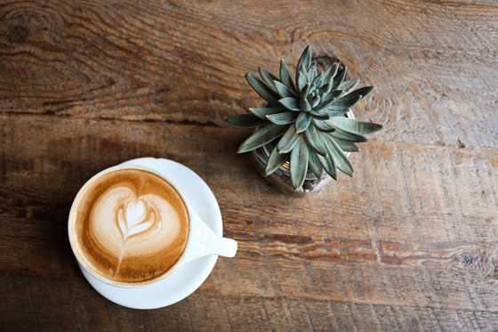

ABOUT
休む時間を、自由な時間に。
店名の「YUKURU(ゆくる)」は、沖縄の方言で「休む」「くつろぐ」を意味するそうです。休む時間こそ自由な時間であり、その人らしい時間にこそ本当の価値がある、という考えが込められています。また「行く」「来る」の響きに、また訪れたいと思ってもらえる場所でありたい、という願いも重ねているとのことです。
オーナーの宮城慎梧さんは沖縄・那覇市出身のペイントアーティスト。2022年に三豊市へ移住しました。自身がアートや音楽に救われた経験から、アーティストに「機会・役割・コミュニティ」を届けられる、日常に根づく場所として、お店という形を選んだと語られています。
ギャラリーとシーシャ、コーヒー、スイーツ。地域内外のアーティストの展示や販売、イベントを開く予定で、展示料をアーティストに負担させない仕組みを目指しているそうです。コワーキングにも、夜のひとり時間にも、コーヒー1杯からでも。ガラス張りの店が、街灯の少ない通りをやさしく照らす存在になることを願っています。
以上はクラウドファンディングページ等で公表されている内容をもとにしています(出典は制作メモに記録)。ご来店前に最新情報はInstagramでご確認ください。シーシャを扱う店舗のため、20歳未満の方は入店できません。


MENU
コーヒーと、スイーツと、シーシャ。
価格・営業時間・詳細メニューは準備中です。以下は公表されている内容の範囲です。
シーシャ
お店のコンセプトの中心。フレーバー・価格は準備中。
コーヒー
種類・価格は準備中。
仁尾レモンのレアクリームチーズケーキ
仁尾町の料理人・浪越弘行さんの協力で開発されたスイーツ。価格は準備中。
そのほかのドリンク・フード
今後も開発が進められているとのこと。準備中。



| 営業時間 | 準備中 |
|---|---|
| 定休日 | 準備中 |
| 電話 | 準備中 |
VOICE
口コミ(イメージ例)
以下は制作側が作成したイメージ例で、実際のお客様の声ではありません。
夜に立ち寄って、コーヒーを片手にのんびり。壁の作品を眺めているうちに、時間を忘れていました。
レモンの香りのチーズケーキがさっぱりしていて、ほっとする味でした。また来たくなる場所です。
ひとりでも入りやすく、ゆったり過ごせました。展示が変わるころにまた寄りたいです。